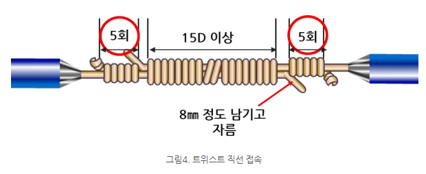

3. 전선의 접속
가. 전선 상호 간 접속
전선의 전기 저항을 증가시키지 아니하도록 다음과 같이 접속할 것.

나전선 등의 트위스트 직선 접속 형태
1) 나전선 상호 또는 나전선과 절연전선 또는 캡타이어 케이블과 접속하는 경우
- 가) 전선의 세기(인장하중)를 20% 이상 감소시키지 아니할 것.
- 나) 접속부분은 접속관 기타의 기구를 사용할 것.
2) 절연전선 상호, 절연전선과 코드, 캡타이어 케이블과 접속하는 경우
접속부분은 절연전선에 절연물과 동등 이상의 절연효력이 있는 것으로 충분히 피복할 것.
3) 코드 상호, 캡타이어 케이블 상호 또는 이들 상호를 접속하는 경우
코드 접속기, 접속함 기타의 기구를 사용할 것. 다만 공칭단면적이 10㎟ 이상인 캡타이어케이블 상호를 접속한 경우에는 접속부분을 1) 및 2)의 규정에 준하여 시설할 것.
4) 이종 도체 접속
도체에 알루미늄을 사용하는 전선과 동을 사용하는 전선 등 전기 화학적 성질이 다른 도체를 접속하는 경우 전기적 부식이 생기지 않도록 할 것.
나. 표피효과를 피하기 위해 전선을 병렬로 사용하는 경우
- 1) 병렬로 사용하는 각 전선의 굵기는 동선 50㎟ 이상 또는 알루미늄 70㎟ 이상으로 하고, 전선은 같은 도체, 같은 재료, 같은 길이 및 같은 굵기의 것을 사용할 것.
- 2) 같은 극의 각 전선은 동일한 터미널러그에 견고하게 부착할 것.
- 3) 같은 극인 각 전선의 터미널러그는 볼트 하나로 체결하지 말고, 동일한 도체에 2개 이상의 리벳 또는 2개 이상의 나사로 접속할 것.
- 4) 병렬로 사용하는 전선에는 각각에 퓨즈를 사용하지 말 것 (과전류 방지)
- 5) 교류회로에서 병렬로 사용하는 전선은 금속관 안에 전자적 불평형이 생기지 않도록 시설할 것.